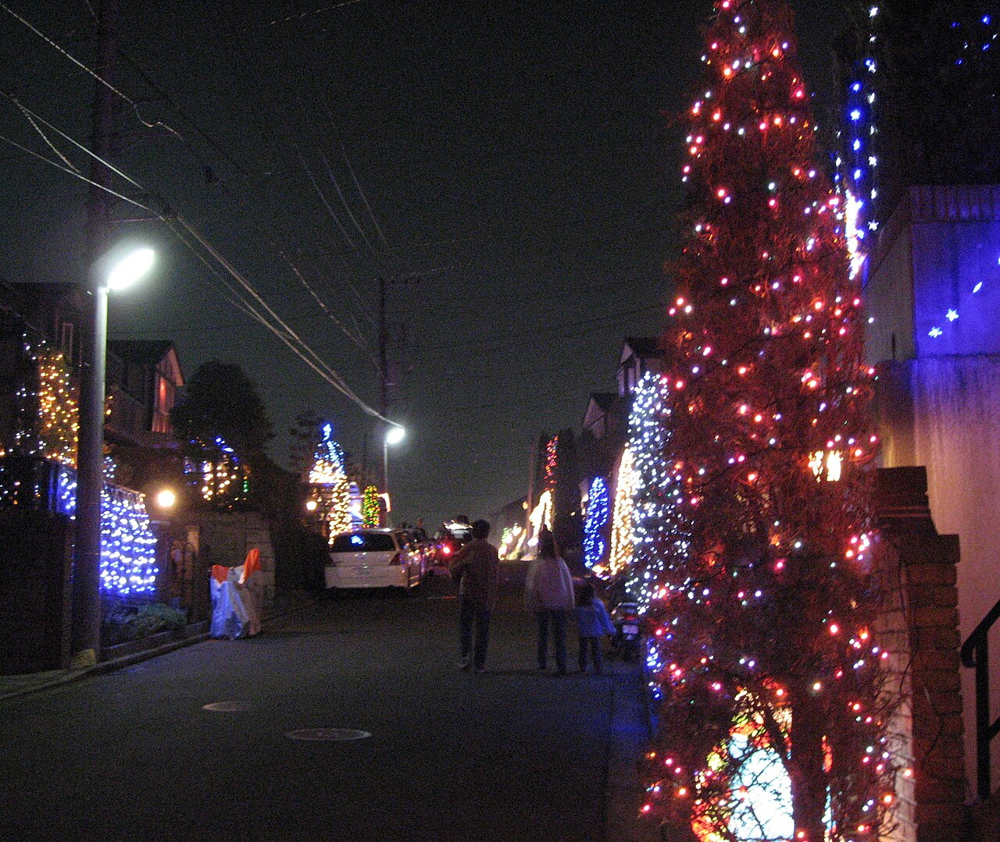
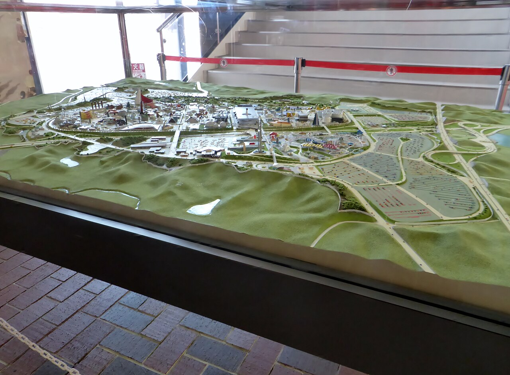
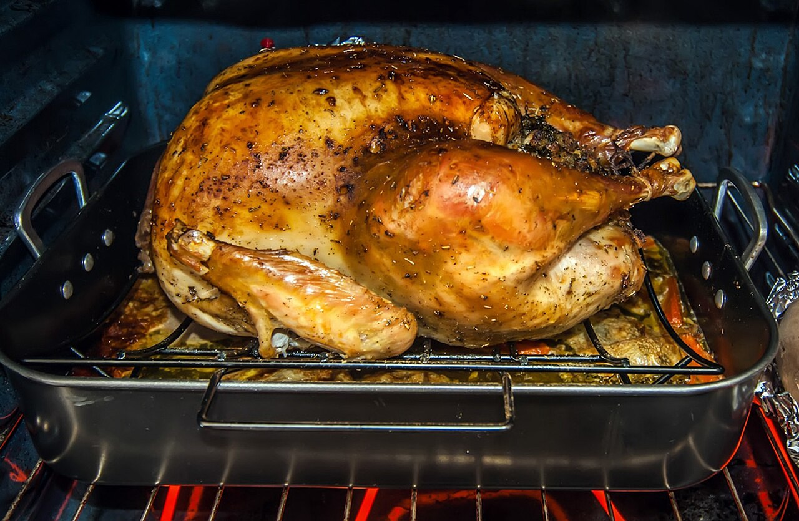
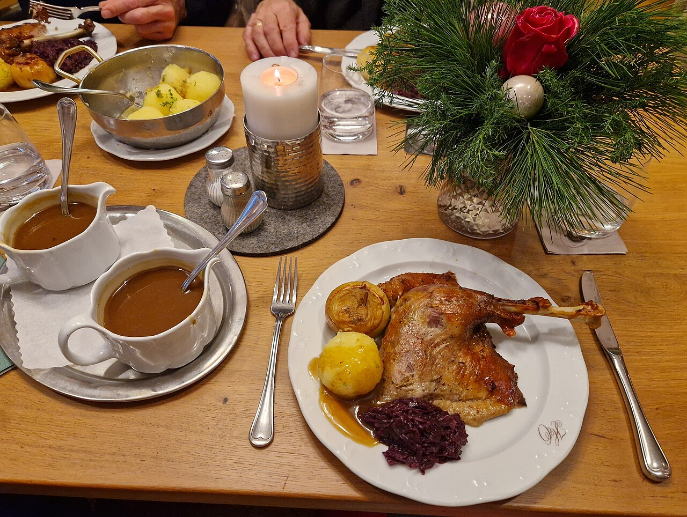
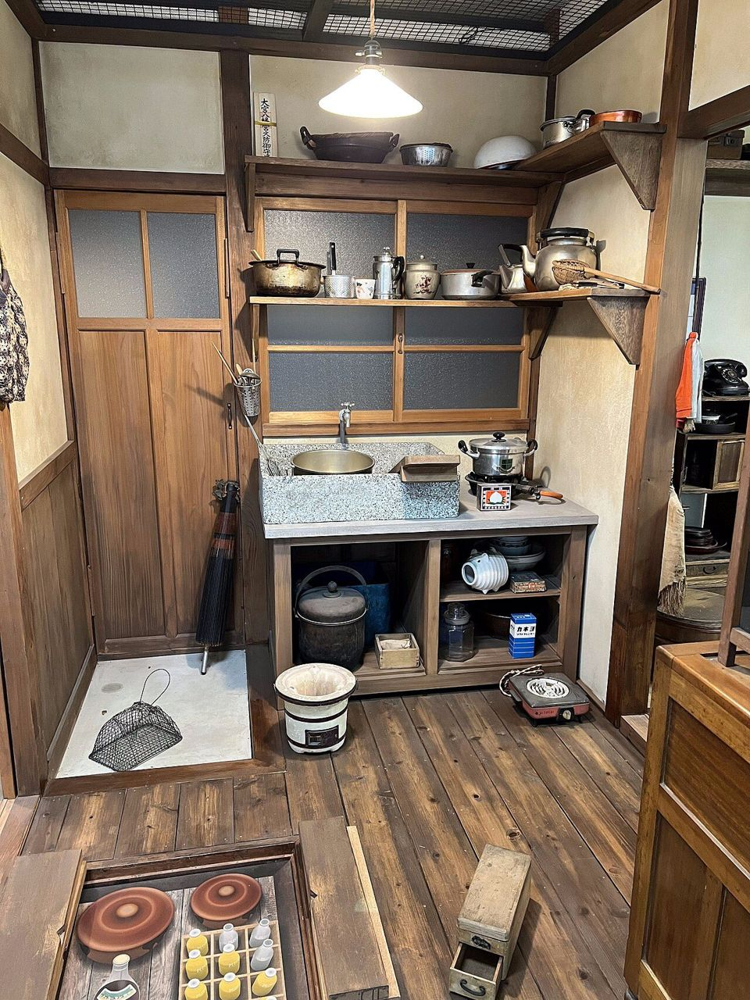
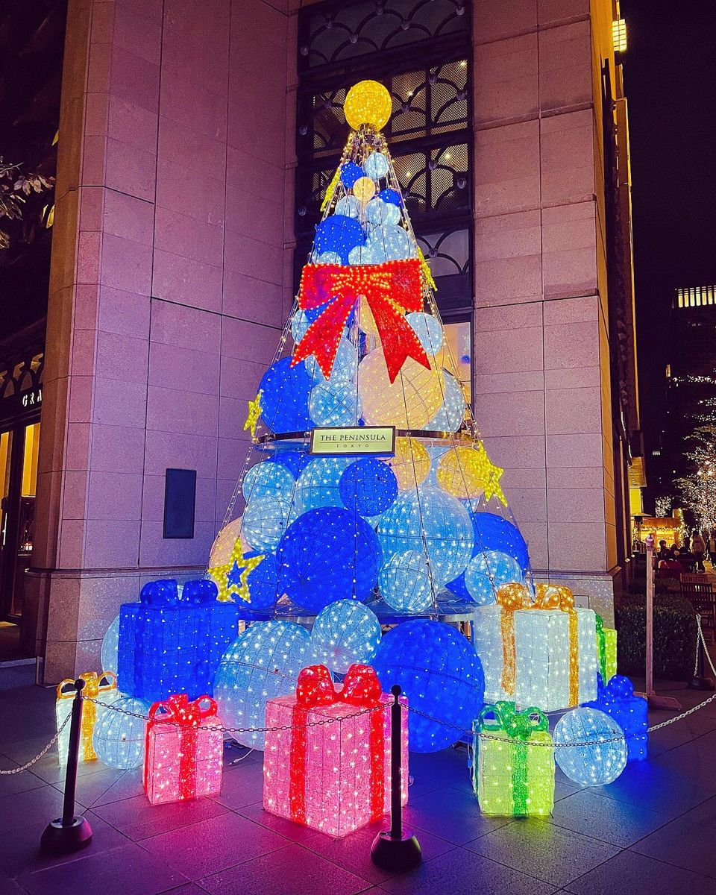
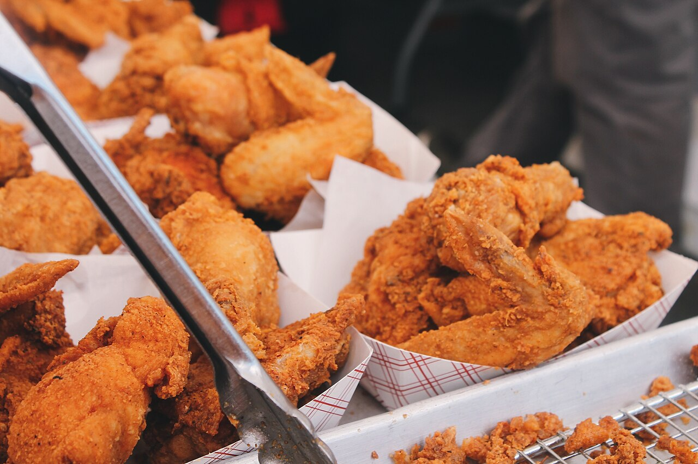

名古屋市西区、1970年11月。日本で最初のケンタッキーフライドチキン（KFC）の店が開きました。赤と白のしま模様の屋根に、英語の看板。道行く人の多くは、何を売る店なのかもわからなかったといいます。
それから半世紀あまり。いまでは12月になると、店の前にチキンを受け取る人の列ができ、何週間も前から予約が入ります。アメリカ生まれのファストフードが、なぜ日本のクリスマスのごちそうになったのでしょう。

欧米のクリスマスのごちそうは七面鳥。なのに日本では、フライドチキンを予約して待つ家がたくさんあります。1970年の1号店から始まる年表と、欧米と日本の食卓のくらべの図で、この習慣の始まりをたどってみませんか。
名古屋市西区、1970年11月。日本で最初のケンタッキーフライドチキン（KFC）の店が開きました。赤と白のしま模様の屋根に、英語の看板。道行く人の多くは、何を売る店なのかもわからなかったといいます。
それから半世紀あまり。いまでは12月になると、店の前にチキンを受け取る人の列ができ、何週間も前から予約が入ります。アメリカ生まれのファストフードが、なぜ日本のクリスマスのごちそうになったのでしょう。
日本には、クリスマスに食べる決まったごちそうがありませんでした。そこへ1974年、KFCが七面鳥の代わりとしてチキンを売りこみました。オーブンがなくても店で予約して持ち帰れる手軽さも、日本の家庭に合っていました。
日本のKFCの始まりは、1970年3月に開幕した大阪の日本万国博覧会（大阪万博）です。会場にアメリカのKFCが実験の店を出し、手ごたえを得ました。同じ年の7月に日本の会社ができ、11月に開いたのが、冒頭の名古屋の1号店（名西店）でした。

最初の店は苦戦しましたが、人通りの多い都市に店を広げ、1973年12月には100店に達します。とはいえ、この時点ではまだ、クリスマスとのつながりはありませんでした。
クリスマスと結びつけたのは、大河原毅（おおかわら・たけし）氏だといわれます。会社ができた1970年に入社し、最初の直営店の店長を務めたとされる人で、のちの1984年から2002年まで日本KFCの社長でした。
よく語られるのは、こんな話です。店で外国人の客が「クリスマスの七面鳥が恋しい」と話しているのを聞き、大河原氏は、チキンを詰めた「パーティーバーレル（大きな筒形の入れ物）」をクリスマスに売ることを思いついた──。日本KFCの広報担当者が、2016年にイギリスのBBCに語った説明です。
大河原氏本人は、別のいきさつも語っています。近くのキリスト教系の幼稚園から、チキンでクリスマス会を開くのでサンタの役をしてほしいと頼まれ、サンタの姿でバーレルを抱えて教室を回った。それが評判になり、ほかの幼稚園からも声がかかったというのです（Business Insider、2018年）。
どちらが本当の始まりかは、はっきりしません。確かなのは、1974年12月に会社として初めてのクリスマスのキャンペーンを全国で行ったことです。店の前に立つカーネル・サンダースの像にサンタの服を着せる飾りも、クリスマスのイメージづくりに一役買ったとされます。
欧米のクリスマスでは、大きな鳥を丸ごと焼くのが定番です。イギリスでは七面鳥が中心で、19世紀ごろまではガチョウも主役でした。ドイツでは今もガチョウの丸焼きがよく食べられます。どちらも、家のオーブンで何時間もかけて焼きます。


ところが1970年代の日本では、丸ごとの鳥を焼けるオーブンのある家は少なかったと考えられます。オーブンの普及率の統計は見当たりませんが、目安として、電子レンジでさえ約11%の家にしかありませんでした（1974年、内閣府「消費動向調査」）。

もう1つの事情は、日本のクリスマスが宗教の行事ではなかったことです。キリスト教の信者は人口の2%に届きません。大正時代から洋菓子店がクリスマスケーキを広めていましたが、ケーキのほかに「これを食べる」という料理は決まっていませんでした。

海外から見ると、これはかなり珍しい習慣です。BBCは2016年に「なぜ日本はKFCでクリスマスを祝うのか」という記事を出し、アメリカの料理人の「聞いたなかでいちばん不思議な話の一つ」という感想を載せています。KFCの本国でも、チキンはクリスマスの料理ではないのです。
フランスのビジネススクールでマーケティング（売るための工夫）を研究するヨーナス・ロッカ氏は、BBCの取材に、KFCは「空白を埋めた」と話しています。決まったごちそうのない日に、「こうして祝えばいい」という答えを差し出したというわけです。
いまの日本のクリスマスのチキンは、予約して受け取るのがふつうです。何週間も前に予約し、決めた時間に店へ取りに行く。予約しそびれた人は、店の前で長く並ぶこともあります。
こうして注文は、クリスマスの数日間に集中します。1974年に始まったキャンペーンは長く続けられ、毎年12月がくるたびに「クリスマスにはチキン」が思い出されてきました。それが、この習慣が半世紀続いた理由の一つと考えられます。

12月21日から25日までの5日間が、1年の日数にしめる割合365日のうちの5日
その5日間に、KFCのチェーンが1年の売上のうちどれだけを売ったか2013年。東洋経済オンライン（2014年）の数字から編集部が計算した目安
クリスマスの時期に、KFCのチキンを食べる日本の家族の数BBC（2016年）が紹介した推計
キャンペーンが話題になると、大河原氏はNHKの取材を受けました。聞かれたのは「欧米でも、クリスマスにはチキンを食べるのですか」ということ。
大河原氏は、欧米では七面鳥だと知っていながら「はい」と答えた、と2018年の Business Insider の記事で振り返っています。「嘘をついたのです」。
同じ記事の別の箇所では、「今も後悔しています。しかし、多くの人が気に入っているようです」とも語っています（英語での発言を Business Insider Japan が訳したもの）。
「欧米の習慣」として受け入れられたものが、実は日本で生まれた習慣だった。英語の看板に道行く人が首をかしげた1970年から半世紀。問いの答えは、海の向こうではなく、日本の台所と街の中にあったのです。
今年の12月、店の前の列やチキンの予約の貼り紙を見かけたら、それが半世紀のあいだに日本でできた「新しい伝統」だと思い出してみてください。